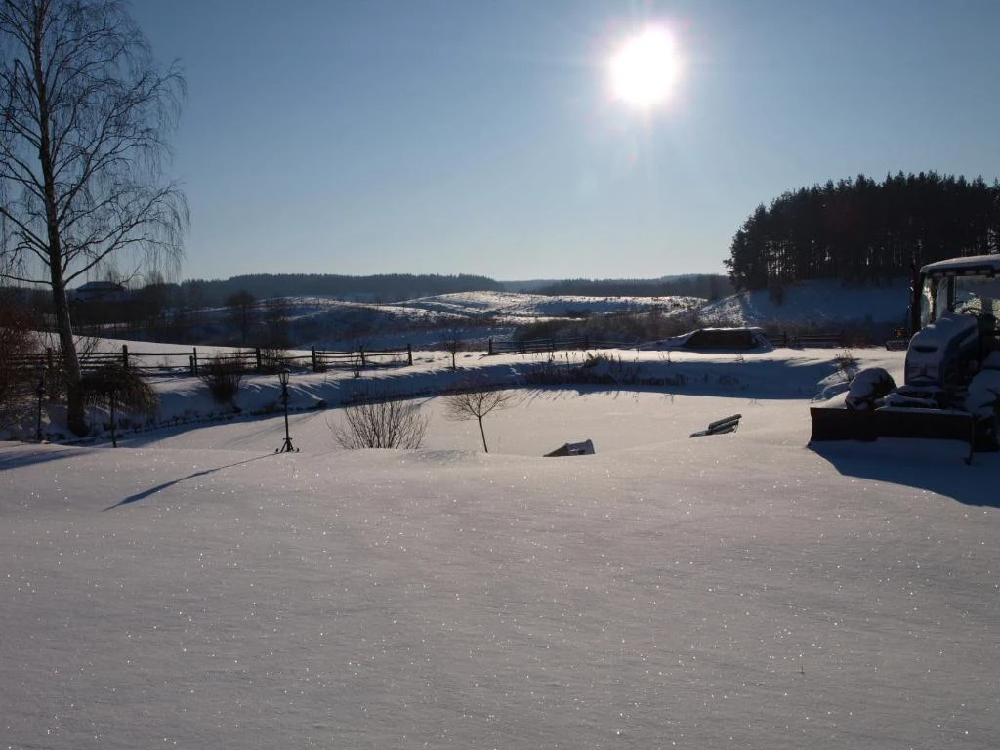
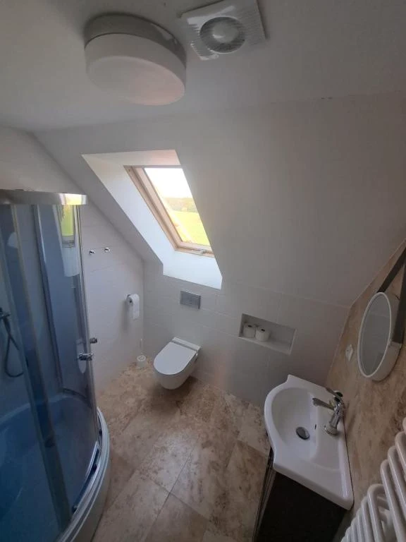

Dom na Sylwestra na Warmii — cały tylko dla Was
Szukacie dużego domu do wynajęcia na Sylwestra z dala od tłumów? Zamiast głośnej sali i obcych za ścianą wybierzcie wynajem domu na Sylwestra na wyłączność w Agroturystyce Giławy. Czeka na Was przytulny dom z kominkiem na Sylwestra, wspólna jadalnia i 3 niezależne apartamenty z łazienkami nawet dla 14 osób.
- duży dom na Sylwestra do 14 osób (3 apartamenty)
- salon z kominkiem + duża jadalnia
- 9,4/10 na Booking.com
- Warmia i Mazury · 25 min z Olsztyna · 2,5h z Warszawy
Agroturystyka na Sylwestra · Warmia i Mazury
Wspólne świętowanie na dole, własny apartament na górze
Agroturystyka Giławy leży na ekologicznym siedlisku w Giławach (gm. Purda) w sercu Warmii, tuż na styku z Mazurami — zaledwie 25 minut jazdy od Olsztyna i 10 minut od Pasymia. Jeśli marzy Wam się spokojny Sylwester na Warmii lub kameralny Sylwester na Mazurach, oddajemy Wam cały dom do wynajęcia na Sylwestra na wyłączność: 3 dwupokojowe apartamenty (każdy z prywatną łazienką z prysznicem), przestronny salon z kominkiem i dużą jadalnię.
Nasza agroturystyka na Sylwestra to zaśnieżone łąki, staw, sosnowy las i ciemne niebo pełne gwiazd za oknem. Bez miejskiego hałasu i kanonady petard pod blokiem — możecie bawić się we własnym rytmie i zabrać ze sobą czworonoga, który spędzi tę noc w spokoju.
Taki duży dom na Sylwestra to idealny układ dla kilku zaprzyjaźnionych rodzin z dziećmi lub zgranej paczki znajomych: wieczorem wszyscy siedzicie razem przy jednym stole i kominku, a gdy ktoś chce odpocząć — zamyka drzwi własnego apartamentu.



Tak może wyglądać Wasz Sylwester
Od powitania przy kominku do noworocznego spaceru
Scenariusz piszecie sami — dom daje Wam przestrzeń, ciepło i pełną swobodę.
-
31.12
Przyjazd i ogień
Parkujecie bezpośrednio przy domu, rozpakowujecie się w trzech apartamentach i rozpalacie drewno w kominku.
-
Wieczór
Wspólny stół
Duża jadalnia ze świecznikami i ekspresem do kawy mieści całą grupę. Obok macie salon z sofami i dużym telewizorem.
-
00:00
Toast pod gwiazdami
Wychodzicie na zadaszony taras lub do ogrodu, wznosicie toast pod rozgwieżdżonym warmińskim niebem i witacie Nowy Rok.
-
1.01
Noworoczny poranek
Długie śniadanie (można wykupić u gospodarzy!), zimowy spacer nad jezioro Serwent i popołudnie przy kominku.
Co dostajecie
Duży dom do wynajęcia na Sylwestra — na wyłączność
Wszystkie trzy apartamenty, salon, jadalnia i ogród tylko dla Waszej grupy — bez innych gości w obiekcie.
3 apartamenty (do 14 osób)
Każdy apartament ma 2 pokoje i własną łazienkę z prysznicem — wygodne noclegi na Sylwestra dla 3 rodzin lub par.
Dom z kominkiem i TV
Prawdziwy kominek opalany drewnem, wygodne kanapy, duży telewizor i szybkie Wi-Fi w całym domu.
Duża jadalnia i taras
Przestronna sala jadalniana na wspólną biesiadę, zadaszony taras oraz miejsce na ognisko i zimowy grill.
Domowe jedzenie (10/10)
Możliwość zamówienia domowych posiłków i śniadań z produktów z naszego eko gospodarstwa (własne jajka i warzywa).
Las, jeziora i spokój dla psów
Sosnowy las i jezioro Serwent obok domu. Zwierzęta są mile widziane — tu odpoczną od miejskich fajerwerków.
Warmia i Mazury — szybki dojazd
Bezpłatny parking na miejscu. Tylko 25 min z Olsztyna, 10 min z Pasymia, ok. 2,5 godz. z Warszawy (S7) i 2 godz. z Trójmiasta.
Zajrzyjcie do środka i za okno
Prawdziwe zdjęcia domu i zimy w Giławach
Kliknij wybrane zdjęcie, aby powiększyć.




Goście o nas
Wracają tu dla gospodarzy, jedzenia i ciszy
20 opinii na Booking.com
„Wszystko ok. Miejsce piękne, gospodarze przemili, super jedzenie.”
„Przepyszne śniadanka! Menu dla dzieci! Przepiękna okolica.”
„Okolica, siedlisko, przemili gospodarze.”
„Bardzo mili gospodarze. Świetne miejsce.”
Autentyczne cytaty z opinii gości opublikowanych w serwisie Booking.com.
Oferta sylwestrowa
Jeden termin, jedna grupa — wynajem domu na Sylwestra
Nasz dom na Sylwestra wynajmujemy w całości tylko jednej ekipie. Po wpłacie zaliczki termin zostaje zamknięty dla innych.
Cały dom na wyłączność — Agroturystyka Giławy
Giławy 75 (gm. Purda, na styku Warmii i Mazur) · dom do wynajęcia na Sylwestra do 14 osób · min. 2 noce
- 3 dwupokojowe apartamenty z prywatnymi łazienkami (wygodne noclegi na Sylwestra)
- Przestronny salon z kominkiem, TV, Wi-Fi i duża jadalnia
- Zadaszony taras, ogród, miejsce na ognisko i bezpłatny parking
- Możliwość wykupienia domowych śniadań i posiłków na miejscu
- Zwierzęta domowe akceptowane (spokojna agroturystyka na Sylwestra pod lasem)
Zadzwoń bezpośrednio do gospodarza
Bez prowizji portali rezerwacyjnych i bez pośredników. Chętnie opowiemy o układzie pokoi, wyżywieniu i ustalimy szczegóły Waszego pobytu na Sylwestra na Warmii.
512 720 750Rezerwacja bezpośrednio u właścicieli
Zarezerwuj w trzech prostych krokach
Bez zakładania kont i długich formularzy — wystarczy krótki telefon, SMS albo e-mail.
-
Zadzwoń lub wyślij SMS
Podaj planowane daty (np. 30.12–02.01 lub 31.12–02.01) oraz liczbę osób. Kliknij poniżej, aby otworzyć gotową wiadomość.
-
Otrzymujesz wycenę
Potwierdzamy dostępność terminu i przesyłamy ostateczną cenę za cały dom, wysokość zaliczki oraz numer konta.
-
Wpłacasz zaliczkę
Po wpłacie zaliczki dom w Giławach jest zarezerwowany wyłącznie dla Waszej grupy.
Najczęstsze pytania
Wszystko, co warto wiedzieć przed rezerwacją
Jak dokładnie podzielony jest dom do wynajęcia na Sylwestra i ile osób pomieści?
Nasz duży dom na Sylwestra mieści maksymalnie 14 osób. Do dyspozycji macie 3 niezależne, dwupokojowe apartamenty (dwa 5-osobowe i jeden 4-osobowy) — każdy z własną prywatną łazienką z prysznicem. Na parterze znajduje się wspólny salon z kominkiem, sofami i TV oraz duża jadalnia.
Na ile nocy można wynająć dom na Sylwestra?
Minimalna długość pobytu to 2 noce. Chętnie gościmy też grupy przyjeżdżające na 3–4 dni lub dłuższy zimowy wypoczynek połączony z Trzema Królami.
Ile kosztuje wynajem domu na Sylwestra i jaka jest zaliczka?
Cena za wynajem domu na Sylwestra zależy od liczby osób i długości pobytu. Zadzwońcie pod numer +48 512 720 750 lub wyślijcie SMS — od razu podamy całkowity koszt za cały dom na wyłączność oraz kwotę zaliczki gwarantującej rezerwację.
Czy można zamówić śniadania lub ciepłe posiłki?
Tak! Posiłki przygotowywane na bazie produktów z naszego ekologicznego gospodarstwa (w tym jajka od własnych kur i domowe przetwory) można dodatkowo zamówić na miejscu. Nasze śniadania są oceniane przez gości na 10/10.
Czy można przyjechać z psem lub innym zwierzakiem?
Tak, nasza agroturystyka na Sylwestra akceptuje zwierzęta domowe (po wcześniejszym uzgodnieniu). Siedlisko leży na uboczu, w otoczeniu łąk i lasu, z dala od miejskiego huku petard, dzięki czemu czworonogi czują się tu znacznie spokojniej niż w mieście.
Gdzie dokładnie leżą Giławy — jak szybko dojedziemy na Warmię i Mazury?
Adres to Giławy 75, 11-030 Purda (woj. warmińsko-mazurskie) — na historycznej Warmii tuż przy granicy z Mazurami (10 minut od Pasymia i jeziora Kalwa, w stronę Szczytna). To świetny wybór zarówno dla osób wpisujących „Sylwester na Warmii”, jak i „Sylwester na Mazurach”. Z Olsztyna dojedziecie w ok. 25 minut (25 km), z Warszawy w ok. 2,5 godziny (trasą S7 przez Nidzicę/Szczytno lub Olsztynek), a z Gdańska w ok. 2 godziny. Bezpłatny parking czeka na terenie posesji. Wyznacz trasę w Google Maps →
Ostatni krok
Dom na Sylwestra czeka na jedną grupę. Niech to będzie Wasza.
Zadzwoń albo napisz, potwierdź dostępność terminu i zarezerwuj cały dom dla swojej ekipy.